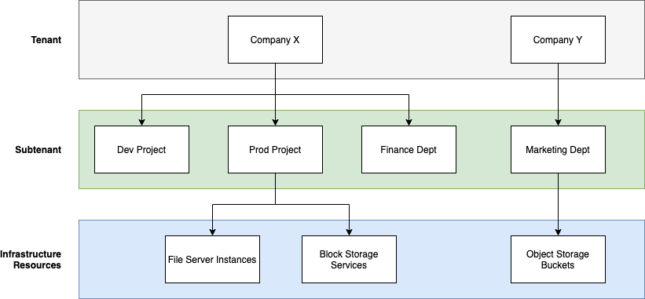

NetApp Keystone 服務
NetApp Keystone 服務
Keystone 中的租賃和多租戶
 建議變更
建議變更
NetApp Keystone 使用 * Tenant* 和 * 子租戶 * 的概念做為擁有邏輯儲存資源的階層式實體。也支援多租戶概念、因為多租戶必須與合作夥伴或服務供應商綁定。實體合作夥伴與服務供應商在此處可互換使用。

|
在 Keystone 環境中、單一租賃是 NetApp 營運的模式、而多租戶則是合作夥伴營運的模式。 |
租戶是 Keystone 中定義的主要計費實體。每位已登入 Keystone 並持有服務訂閱的客戶、都會以 Keystone 租戶的身份存在。客戶為 NetApp 提供客戶名稱和 / 或識別碼、以協助他們加入租戶、並追蹤訂閱日期和承諾條款。
在多租戶環境中、合作夥伴是 Keystone 環境中 NetApp 的租戶 / 客戶。合作夥伴也可以擁有多個租戶或客戶、這些租戶或客戶與終端客戶 / 子租戶有關。在此模式中、租戶 / 子租戶是服務供應商的客戶、與 NetApp 並無計費關係。
Keystone 子租戶完全存在於與多對一關聯的父租戶內。子租戶可在租戶內部提供邏輯資源分離、並作為回饋報告的基礎。所有儲存資源（即檔案服務、區塊儲存和物件儲存）都屬於子租戶。

NetApp 營運（單一租賃）環境中的訂購模式
-
訂閱是由 NetApp 管理員或 GSSC 針對租戶和區域所建立。
-
訂閱名稱衍生自訂閱租戶的帳單實體。
-
在訂閱中、會設定開始日期和合約期限。
-
每個租戶區域只能有一個作用中的訂閱
-
單一訂閱可以有多個費率方案、而且每個費率方案都對應一個服務層級。
-
每個費率計畫都有每個服務層級的已認可容量。
-
服務層級包括：
-
極致
-
極致分層
-
效能
-
效能分層
-
價值
-
每個服務層級的資料保護
-
進階資料保護、實現極致、效能、價值
-
儲存物件
-
多租戶環境中的訂購模式
-
服務供應商是 Keystone 客戶、並以租戶形式訂閱。訂閱內容以下列項目為基礎：
-
每個服務層級和區域的承諾
-
以分配容量為單位充電、最低 100 TiB
-
突發費用適用於 100% 至 120% 的承諾容量
-
-
NetApp 每月向供應商收取費用、作為一般租賃條款的一部分。
-
若要讓租戶使用某個服務層級、服務供應商或合作夥伴應先針對服務層級設定 Keystone 。
-
服務供應商會根據服務層級、區域和彈性的最小值來建立租戶訂閱。
-
服務供應商可以向租戶銷售比向 NetApp 購買更多容量（超額訂閱）。因此、租戶所使用的容量不受服務供應商所訂閱容量的限制。
-
租戶可以使用超出訂閱量的儲存容量、這在使用量報告中會列為「突發」。
-
合作夥伴可以每天或每月檢視租戶使用情況報告。
-
租戶可以建立比相對應 Keystone 訂閱更長的訂閱時間、但在該活動期間會向終端客戶顯示警告訊息。
-
合作夥伴的 Keystone 訂閱由 NetApp 管理員或 GSSC 設定。Keystone 訂閱和租戶訂閱的管理是由具有合作夥伴管理員角色的使用者執行。
-
擁有租戶管理員角色的使用者只能檢視租戶訂閱（非合作夥伴的 Keystone 訂閱）。他們可以更新指定的訂閱、以變更容量和服務層級。他們可以提出額外訂閱的服務要求。
-
合作夥伴管理員可以在現有訂閱到期時建立另一個訂閱、或是在現有訂閱不再有效的未來日期建立另一個訂閱。新訂閱的開始日期必須大於或等於目前的結束日期。